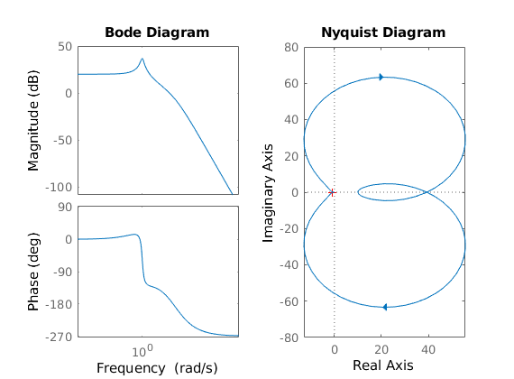
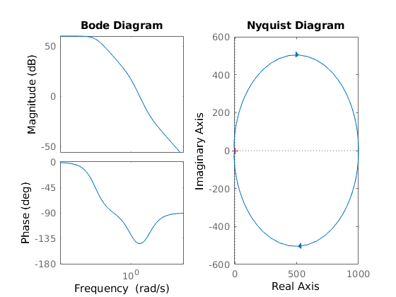
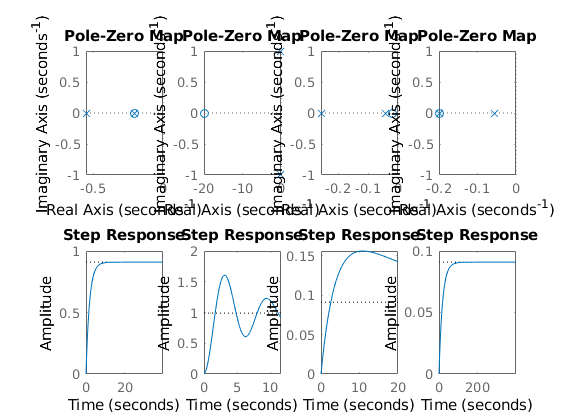
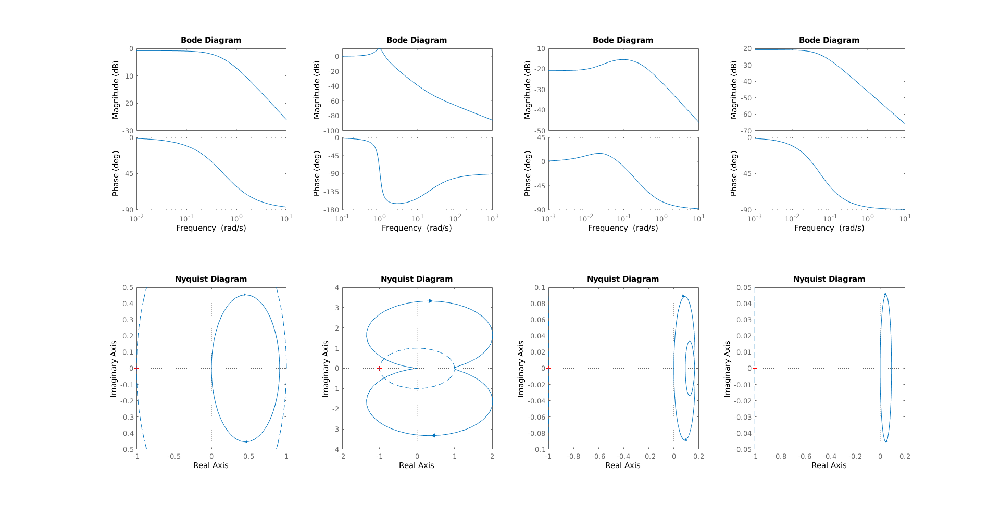

ES155 P7
Contents
Problem 3
3.a
P = tf(1, [1 10 3 10])
S = 1000 * tf([1 1], [1 10])
L = P*S
figure(1); clf;
subplot(1,2,1)
bode(L)
subplot(1,2,2)
nyquist(L)
saveas(gcf, "ES155P7_3a.jpg")
pole(L)
[GainMargin, PhaseMargin, Wcg, Wcp] = margin(L)
P =
1
-----------------------
s^3 + 10 s^2 + 3 s + 10
Continuous-time transfer function.
S =
1000 s + 1000
-------------
s + 10
Continuous-time transfer function.
L =
1000 s + 1000
-----------------------------------
s^4 + 20 s^3 + 103 s^2 + 40 s + 100
Continuous-time transfer function.
ans =
-10.0000 + 0.0000i
-9.7980 + 0.0000i
-0.1010 + 1.0052i
-0.1010 - 1.0052i
GainMargin =
1.6047
PhaseMargin =
12.9616
Wcg =
9.0682
Wcp =
7.0090

3.b
P = tf(100, [100, 101, 1])
S = tf([1 10], 1)
L = P*S
figure(2); clf;
subplot(1,2,1)
bode(L)
subplot(1,2,2)
nyquist(L)
saveas(gcf, "ES155P7_3b.jpg")
pole(L)
[GainMargin, PhaseMargin, Wcg, Wcp] = margin(L)
P =
100
-------------------
100 s^2 + 101 s + 1
Continuous-time transfer function.
S =
s + 10
Continuous-time transfer function.
L =
100 s + 1000
-------------------
100 s^2 + 101 s + 1
Continuous-time transfer function.
ans =
-1.0000
-0.0100
GainMargin =
Inf
PhaseMargin =
35.2780
Wcg =
NaN
Wcp =
3.1623

Problem 4
a = 0.2
b = 25
c = 50
T = 200
m = 1000
P = tf(T*b*a, [m, a*m + c, a*c])
a =
0.2000
b =
25
c =
50
T =
200
m =
1000
P =
1000
---------------------
1000 s^2 + 250 s + 10
Continuous-time transfer function.
4.a
table = zeros(4,8);
figure(3); clf;
figure(4); clf;
Kp = [0.5, 0.05, 0.05, 0.005]
Ki = [0.1, 1, 0.001, 0.001]
for i = 1:4
figure(3)
kp = Kp(i)
ki = Ki(i)
table(i,1) = kp;
table(i,2) = ki;
C = tf([kp, ki], 1)
G = feedback(P*C, 1)
L = P*C
sysL = ss(L)
sys = ss(G);
table(i,3) = isstable(sys);
[GainMargin, PhaseMargin, Wcg, Wcp] = margin(sysL)
table(i,4) = GainMargin;
table(i,5) = PhaseMargin;
[y, t] = step(sys);
if y(length(t)) == y(length(t-2))
error_SS = 1 - y(length(t))
else
error("Steady State not reached")
end
table(i,6) = error_SS;
S = stepinfo(sys)
table(i,7) = S.RiseTime;
table(i,8) = S.Overshoot;
subplot(2,4,i)
pzmap(sys)
subplot(2,4,i+4)
step(sys, S.RiseTime*10)
figure(4)
subplot(2,4,i)
bode(sys)
subplot(2,4,i+4)
nyquist(sys)
theta = 0:0.1:2*pi;
x = cos(theta);
y = sin(theta);
hold on;
plot(x,y,'--');
hold off;
end
table
Kp =
0.5000 0.0500 0.0500 0.0050
Ki =
0.1000 1.0000 0.0010 0.0010
kp =
0.5000
ki =
0.1000
C =
0.5 s + 0.1
Continuous-time transfer function.
G =
500 s + 100
----------------------
1000 s^2 + 750 s + 110
Continuous-time transfer function.
L =
500 s + 100
---------------------
1000 s^2 + 250 s + 10
Continuous-time transfer function.
sysL =
A =
x1 x2
x1 -0.25 -0.08
x2 0.125 0
B =
u1
x1 1
x2 0
C =
x1 x2
y1 0.5 0.8
D =
u1
y1 0
Continuous-time state-space model.
GainMargin =
Inf
PhaseMargin =
95.7406
Wcg =
NaN
Wcp =
0.4974
error_SS =
0.0910
S =
struct with fields:
RiseTime: 3.9946
SettlingTime: 7.1129
SettlingMin: 0.8223
SettlingMax: 0.9091
Overshoot: 0
Undershoot: 0
Peak: 0.9091
PeakTime: 19.1743
kp =
0.0500
ki =
1
C =
0.05 s + 1
Continuous-time transfer function.
G =
50 s + 1000
-----------------------
1000 s^2 + 300 s + 1010
Continuous-time transfer function.
L =
50 s + 1000
---------------------
1000 s^2 + 250 s + 10
Continuous-time transfer function.
sysL =
A =
x1 x2
x1 -0.25 -0.08
x2 0.125 0
B =
u1
x1 4
x2 0
C =
x1 x2
y1 0.0125 2
D =
u1
y1 0
Continuous-time state-space model.
GainMargin =
Inf
PhaseMargin =
17.1460
Wcg =
NaN
Wcp =
0.9900
error_SS =
0.0047
S =
struct with fields:
RiseTime: 1.1611
SettlingTime: 25.7136
SettlingMin: 0.6095
SettlingMax: 1.6066
Overshoot: 62.2638
Undershoot: 0
Peak: 1.6066
PeakTime: 3.0701
kp =
0.0500
ki =
1.0000e-03
C =
0.05 s + 0.001
Continuous-time transfer function.
G =
50 s + 1
---------------------
1000 s^2 + 300 s + 11
Continuous-time transfer function.
L =
50 s + 1
---------------------
1000 s^2 + 250 s + 10
Continuous-time transfer function.
sysL =
A =
x1 x2
x1 -0.25 -0.08
x2 0.125 0
B =
u1
x1 0.25
x2 0
C =
x1 x2
y1 0.2 0.032
D =
u1
y1 0
Continuous-time state-space model.
GainMargin =
Inf
PhaseMargin =
Inf
Wcg =
NaN
Wcp =
NaN
error_SS =
0.9089
S =
struct with fields:
RiseTime: 2.0130
SettlingTime: 98.7607
SettlingMin: 0.0896
SettlingMax: 0.1557
Overshoot: 71.3097
Undershoot: 0
Peak: 0.1557
PeakTime: 11.0995
kp =
0.0050
ki =
1.0000e-03
C =
0.005 s + 0.001
Continuous-time transfer function.
G =
5 s + 1
---------------------
1000 s^2 + 255 s + 11
Continuous-time transfer function.
L =
5 s + 1
---------------------
1000 s^2 + 250 s + 10
Continuous-time transfer function.
sysL =
A =
x1 x2
x1 -0.25 -0.08
x2 0.125 0
B =
u1
x1 0.125
x2 0
C =
x1 x2
y1 0.04 0.064
D =
u1
y1 0
Continuous-time state-space model.
GainMargin =
Inf
PhaseMargin =
Inf
Wcg =
NaN
Wcp =
NaN
error_SS =
0.9091
S =
struct with fields:
RiseTime: 39.9456
SettlingTime: 71.1286
SettlingMin: 0.0822
SettlingMax: 0.0909
Overshoot: 0
Undershoot: 0
Peak: 0.0909
PeakTime: 191.7425
table =
Columns 1 through 7
0.5000 0.1000 1.0000 Inf 95.7406 0.0910 3.9946
0.0500 1.0000 1.0000 Inf 17.1460 0.0047 1.1611
0.0500 0.0010 1.0000 Inf Inf 0.9089 2.0130
0.0050 0.0010 1.0000 Inf Inf 0.9091 39.9456
Column 8
0
62.2638
71.3097
0
 